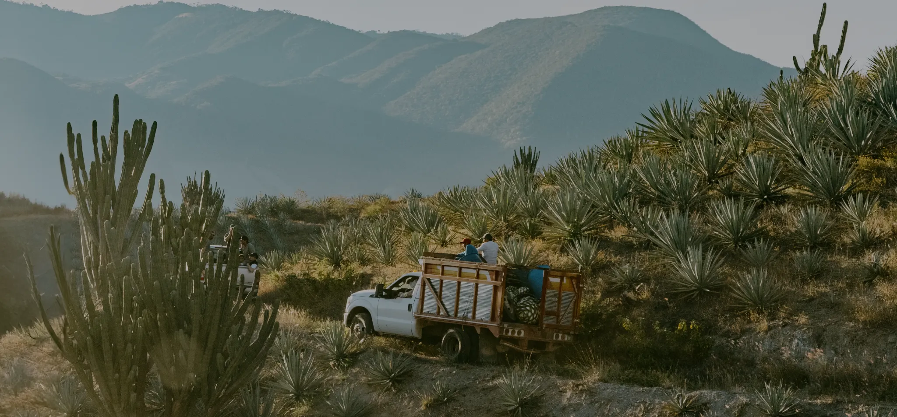
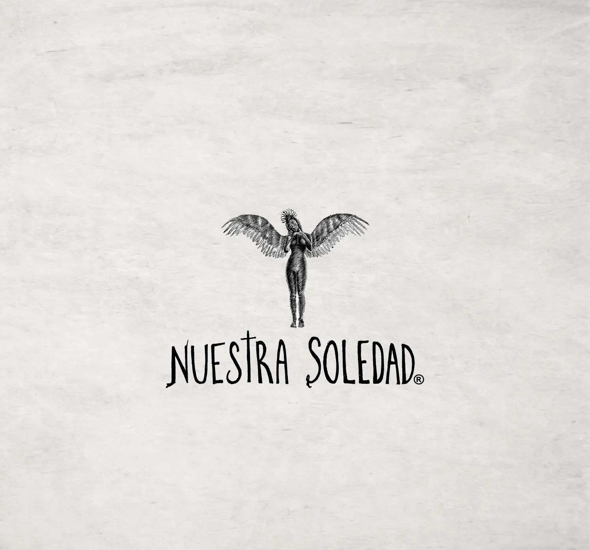
Nacido de la diversidad de Oaxaca, Nuestra Soledad revela la esencia del Maguey Espadín a través de sus distintos Terruños.
Nuestro origen
Nuestra Soledad nace en 2012 como una búsqueda por comprender la riqueza del Maguey Espadín. Para hacerlo, reunimos a seis Maestros Mezcaleros de distintas comunidades de Oaxaca.
Así nació una colección de seis mezcales que revela cómo un mismo Espadín puede adquirir perfiles únicos e irrepetibles. A través de sus notas, cada uno expresa la influencia del territorio, el clima, el suelo y el conocimiento de cada Maestro Mezcalero.
Descubrir más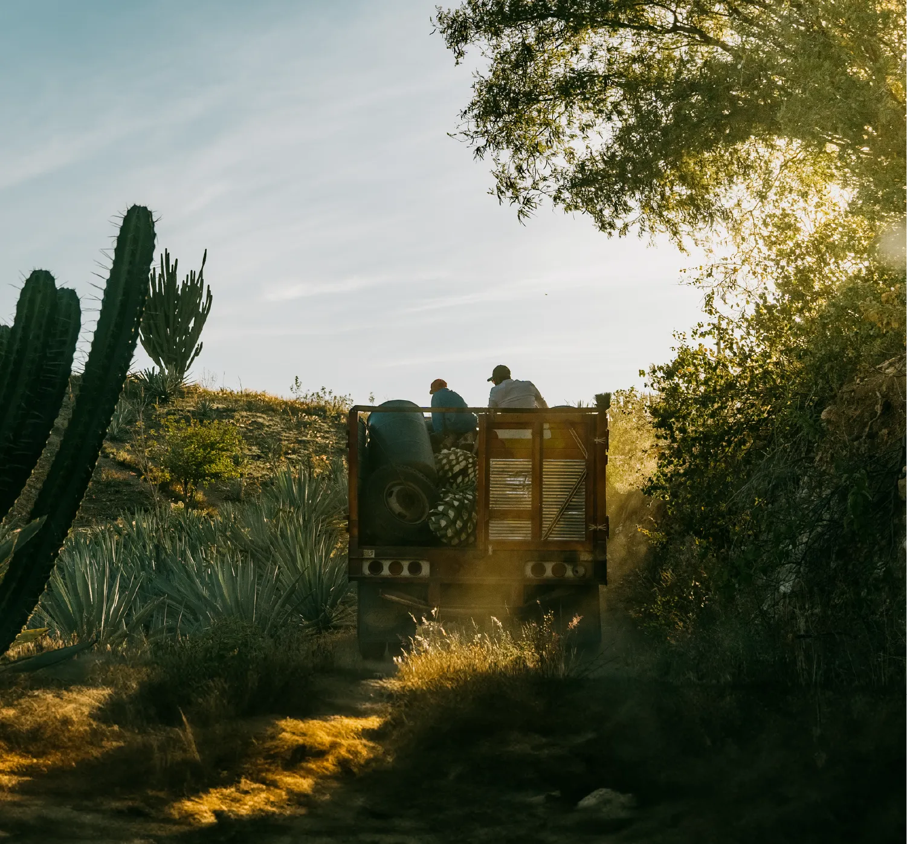
Descubrir más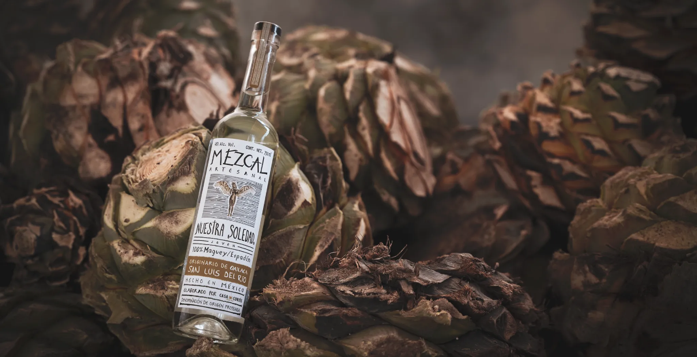
Nuestros mezcales
El Espadín es uno de los agaves más emblemáticos de Oaxaca y el punto de partida de Nuestra Soledad.
Su carácter cambia según el lugar donde crece y las manos que lo transforman, revelando matices propios de cada territorio en cada uno de nuestros mezcales.
⟶Santiago Matatlán
Guiado por la experiencia y el carácter de Gregorio Martínez Jarquín, conocido como Tío G, este terruño expresa una visión contemporánea profundamente arraigada en la tradición mezcalera.
El uso de agua de pozo, hornos alimentados con pino y encino, y un profundo respeto por el oficio dan vida a mezcales que reflejan fielmente la identidad de su origen.
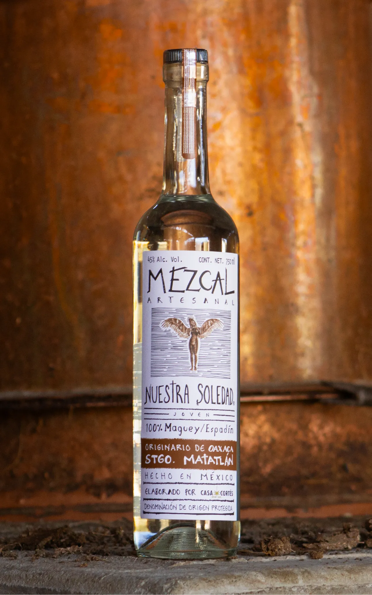
COCIDOESPECIASFRUTAL
Nuestro proceso
 Maguey semicultivado
Maguey semicultivado Horno subterráneo de piedra volcánica
Horno subterráneo de piedra volcánica Tahona
Tahona Tinas de madera al aire libre
Tinas de madera al aire libre Doble destilación alambique de cobre
Doble destilación alambique de cobreSanta María Zoquitlán
A 1,080 metros de altitud, en las faldas de la Sierra Sur de Oaxaca, este terruño encuentra su identidad entre agua de manantial, suelos fértiles y una exuberante vegetación tropical.
Bajo el cuidado de Ignacio y José Parada, nacen mezcales que reflejan la riqueza de su entorno: complejos, expresivos y profundamente ligados a su origen. La cercanía del río y la influencia de la montaña imprimen un carácter único a cada destilado.
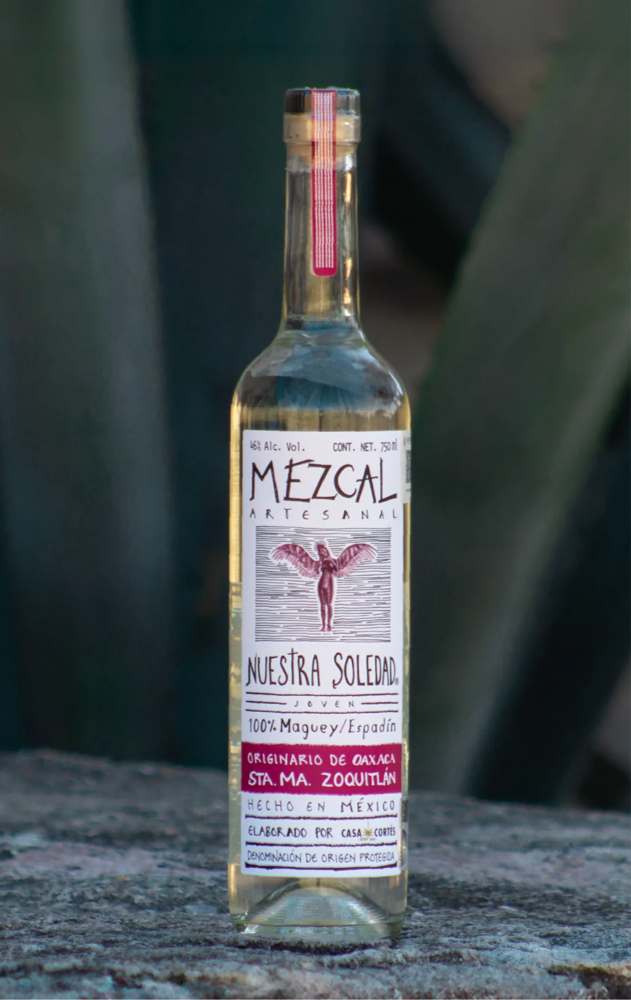
COCIDOESPECIASFRUTAL
Nuestro proceso
Maguey semicultivadoHorno subterráneo de piedra volcánicaTahonaTinas de madera al aire libreDoble destilación alambique de cobreSan Luis del Río
En la transición entre la Sierra Sur y los Valles Centrales de Oaxaca, este terruño se distingue por su clima húmedo, vegetación tropical y la influencia constante del agua de río.
Bajo el cuidado de Iván Méndez, heredero del legado de Rafael Méndez, nacen mezcales de gran frescura y complejidad, donde suelen aparecer notas frutales que evocan el paisaje que les da origen.
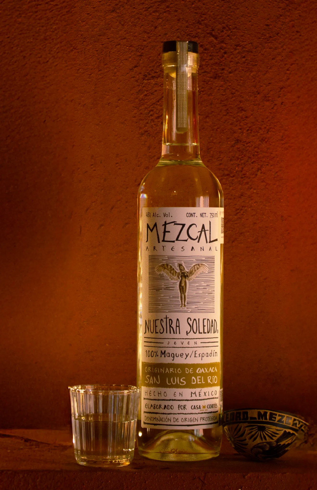
COCIDOESPECIASFRUTAL
Nuestro proceso
Maguey semicultivadoHorno subterráneo de piedra volcánicaTahonaTinas de madera al aire libreDoble destilación alambique de cobreSan Baltazar Guelavila
Terruño de suelos minerales, aguas vivas y magueyes nativos, donde la tierra imprime su carácter en cada destilado.
Aquí, Gregorio Martínez “Don Goyo” dio vida a mezcales de profunda identidad, guiado por su conocimiento, hospitalidad y respeto por la tradición. Su legado permanece como parte inseparable de este lugar y de los mezcales que nacen de él.
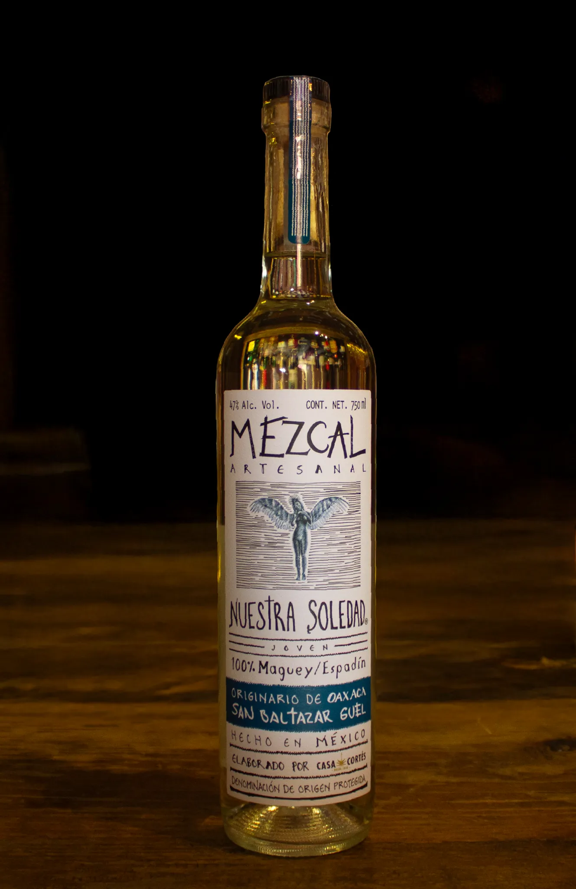
COCIDOESPECIASFRUTAL
Nuestro proceso
Maguey semicultivadoHorno subterráneo de piedra volcánicaTahonaTinas de madera al aire libreDoble destilación alambique de cobreLachigui, Miahuatlán
Entre las laderas de la Sierra Sur de Oaxaca, este terruño se define por sus suelos pedregosos de origen calizo, clima seco y una vegetación dominada por mezquites y copales.
El agua que nace de la montaña recorre cada etapa del proceso, aportando una marcada expresión mineral a los mezcales de Tío Pedro y su hijo Librado. Un paisaje austero y auténtico que se refleja con claridad en cada destilado.
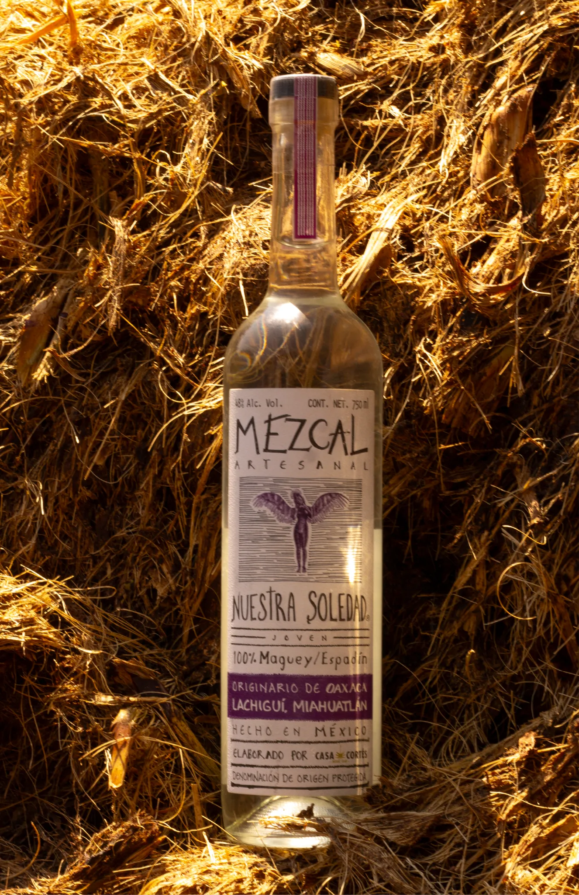
COCIDOESPECIASFRUTAL
Nuestro proceso
Maguey semicultivadoHorno subterráneo de piedra volcánicaTahonaTinas de madera al aire libreDestilación alambique de cobre con refrescaderaAgua del Espino, Ejutla
Entre tierras coloradas, magueyes silvestres y agua de manantial, este terruño revela una expresión única de Ejutla.
Aquí, la familia Vásquez Ríos mantiene viva la tradición de la montera ejuteca, un método distintivo que, junto con los recursos naturales de la región, da vida a mezcales complejos, auténticos y profundamente ligados a su lugar de origen.
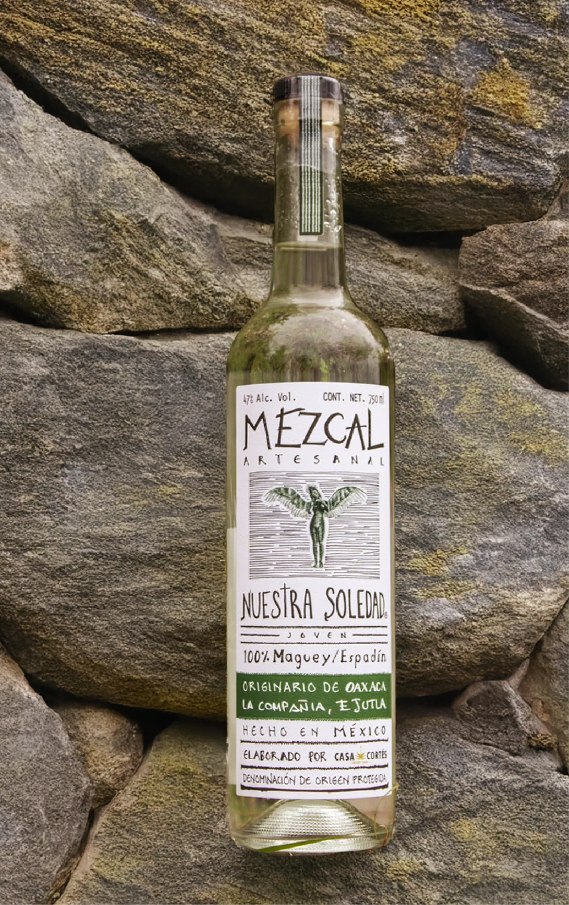
COCIDOESPECIASFRUTAL
Nuestro proceso
Maguey semicultivadoHorno subterráneo de piedra volcánicaTahonaTinas de madera al aire libreDestilación alambique de cobre con refrescadera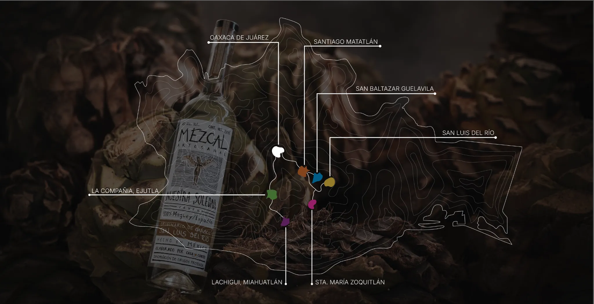